The halwa puri itself
Light, non-oily chakki-atta puris and desi-ghee halwa with khoya — reviewers call it the best halwa puri in the city.
Bakhtay Wala · Guru Nanak Food Street · Gujranwala
One of Gujranwala’s oldest food-street shops: the halwa puri people cross the city for in the morning, and the grilled Rahu they come back for after dark.
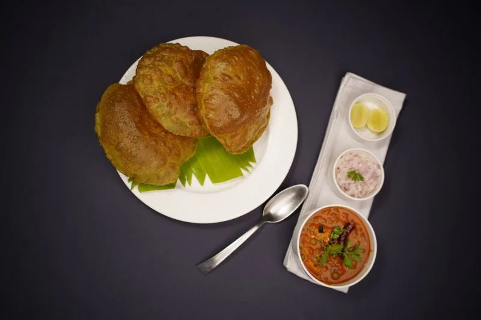
01 · The breakfast board
Reviewers say this is the only place in the city making halwa puri early in the morning, when nothing else is open. The puris are made from chakki atta — stone-ground wheat — so they fry up light and barely oily. The halwa is cooked in desi ghee and comes with a spoon of khoya on top.
Prices on request — call 0321 7137063 for today’s rates.
02 · From the tawa
What regulars keep coming back for is not complicated: puris that stay crisp without sitting heavy, chanay with a proper desi bite, and halwa that tastes of ghee and khoya — not of the fryer.
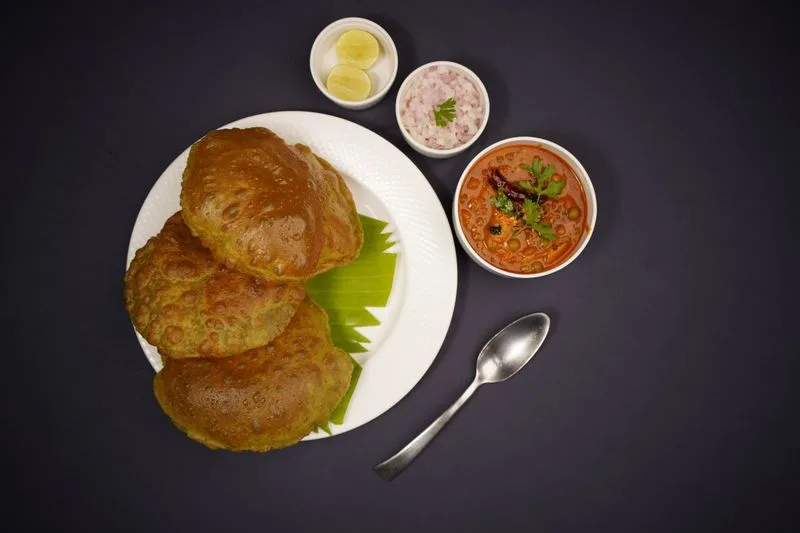
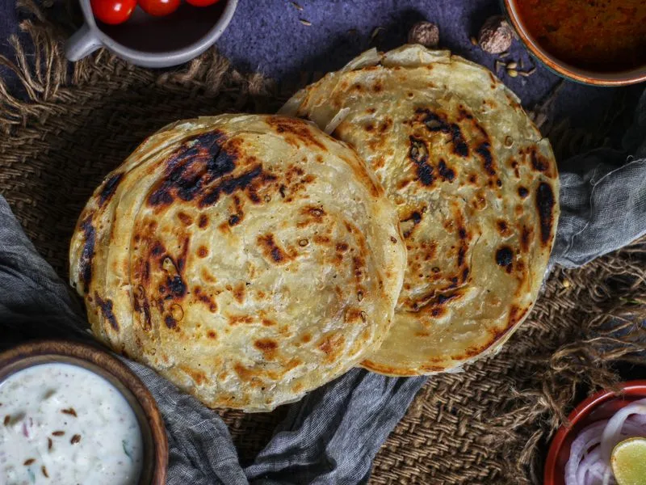
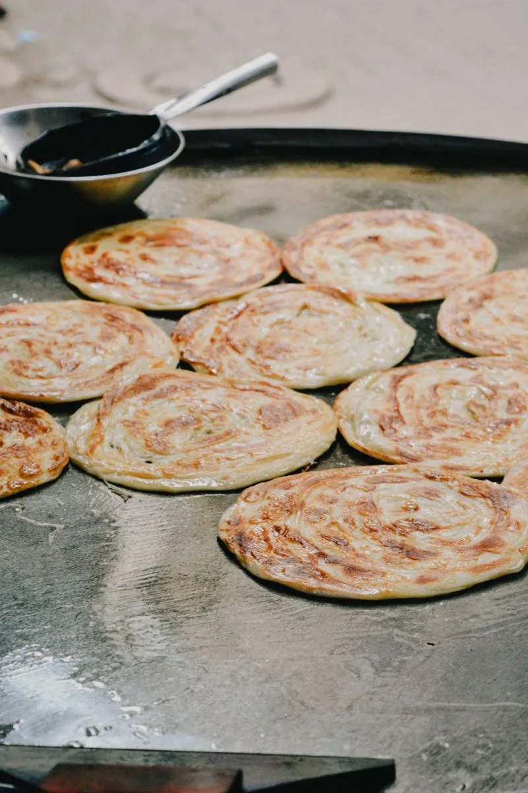
03 · Fish & grill
By evening the kitchen turns to the grill. Reviewers praise the grilled Rahu above all — masala kept mild, fish kept moist — and call it without comparison in Gujranwala. Fried fish and fish tikki come off the same grill.
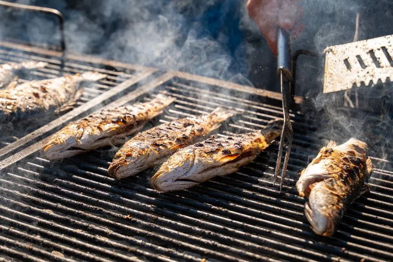
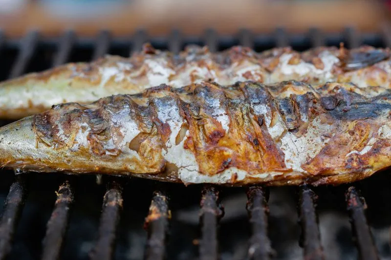
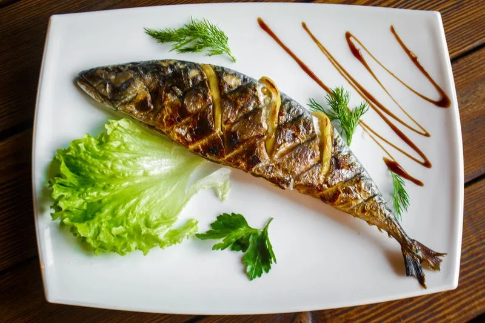
Straight talk: grill fish is cooked to order, and reviewers warn it can take a while — one waited over fifty minutes. Call ahead on 0321 7137063 so your fish is on the grill before you arrive. Dinner fish draws mixed words from some reviewers; the grilled Rahu is the one they agree on.
04 · The morning
No ceremony, no shortcuts — the same four moves every morning, because the queue at the counter is already forming.
Chakki atta is kneaded and rested while the street is still quiet. The puris are rolled fresh through the morning, never ahead.
Puris go into hot oil and puff in seconds — light, crisp, and barely oily, the way reviewers describe them.
Halwa is cooked in desi ghee, served yellow and glossy with a spoon of khoya on top, beside the chanay.
Most orders leave in packets — regulars take the breakfast home. Seating at the shop is limited, so plan on takeaway.
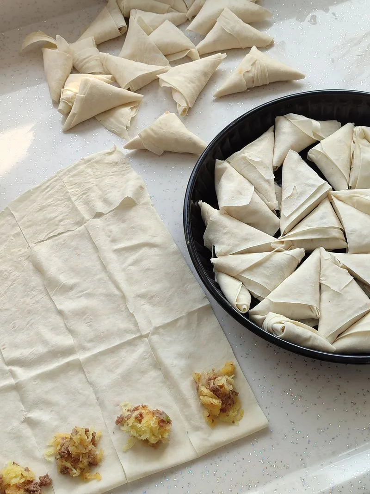
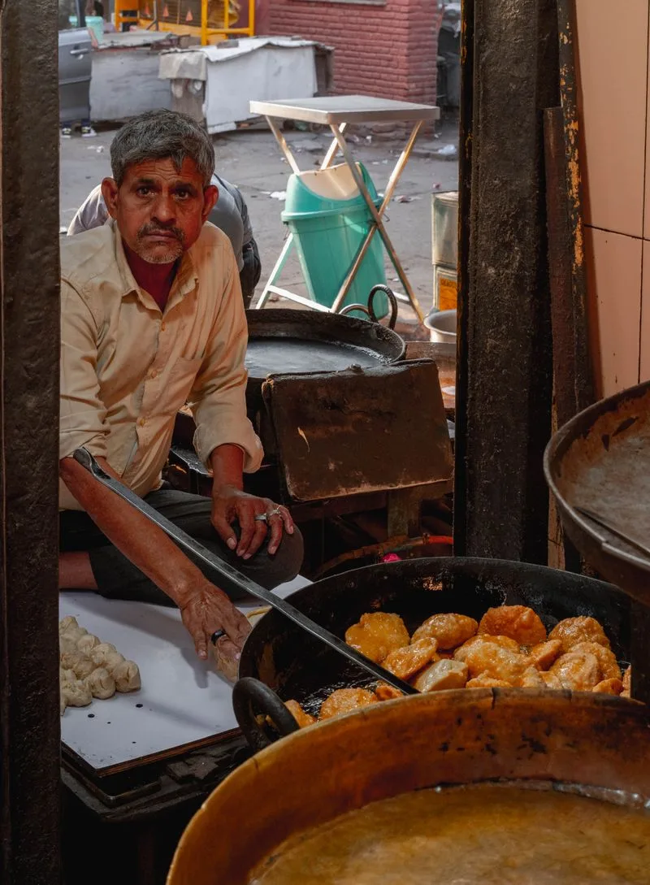
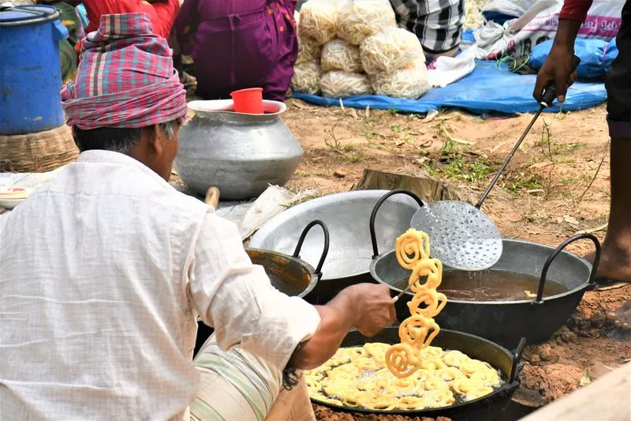
05 · The sweet counter
The counter runs all day beside the breakfast and the grill. The halwa is the sweet reviewers name — cooked in desi ghee, finished with khoya — and the mithai is made fresh through the day and sold by the kilo for the family table.
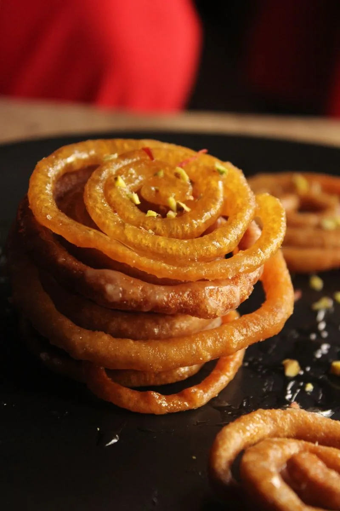
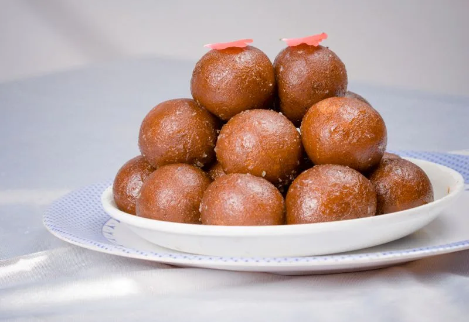
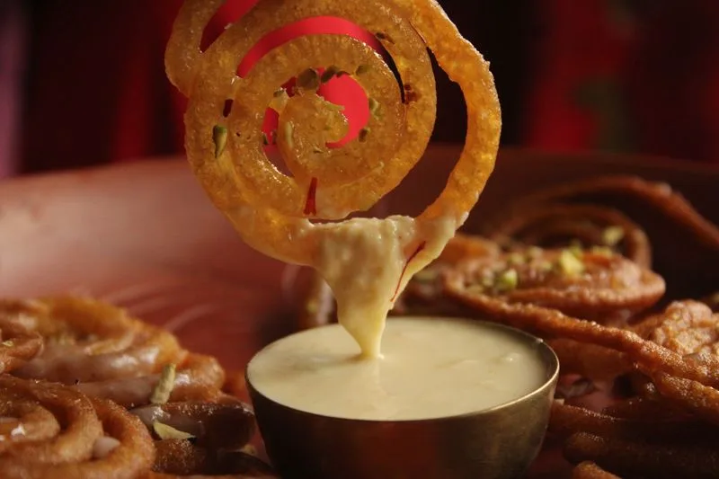
Halwa, by the plate. Single or double, with khoya on top — the sweet the regulars order with their puri. For weddings and family gatherings, call ahead and the counter will pack mithai by the kilo.
Call the counter06 · Why Gujranwala comes here
Light, non-oily chakki-atta puris and desi-ghee halwa with khoya — reviewers call it the best halwa puri in the city.
The only place making halwa puri early in the morning, when no other breakfast options are open yet.
Mild masala, moist fish. Reviewers say it has no comparison with anyone else in Gujranwala.
Chicken tikki is one reviewers searched the whole city for — Wapda Town to Satellite Town — and found only here.
A very old and well-known shop on Guru Nanak Food Street, where food lovers come from far off for the halwa.
“The taste was good. The masala was very mild and the fish was moist. I think it has no comparison with anyone in Gujranwala.”
07 · Takeaway
There is no proper seating at the shop — most regulars get their food packed and enjoy it at home. That is how the place has always worked: order at the counter, carry it out still steaming, and eat it the way a Gujranwala breakfast is meant to be eaten, with the family around the table.
Coming for the grill? Ring first — grilled fish is cooked to order and worth the wait only if you have the time.
Call 0321 7137063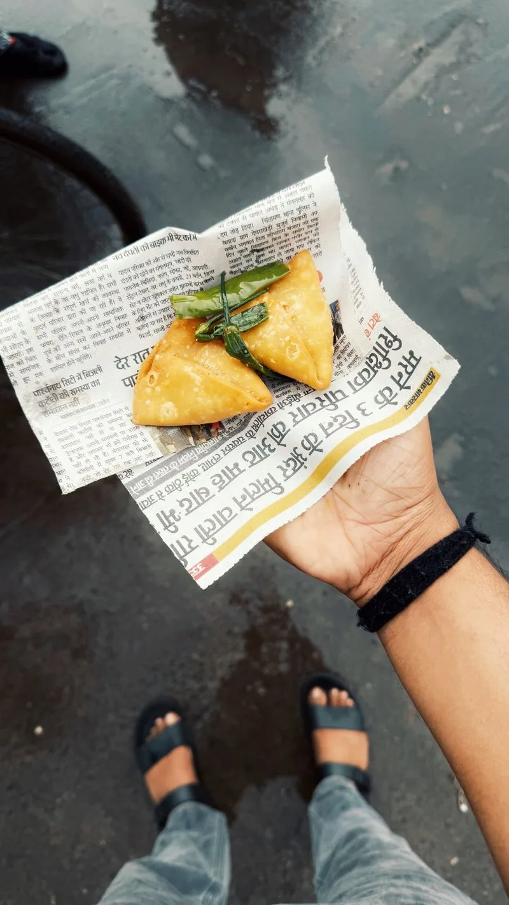
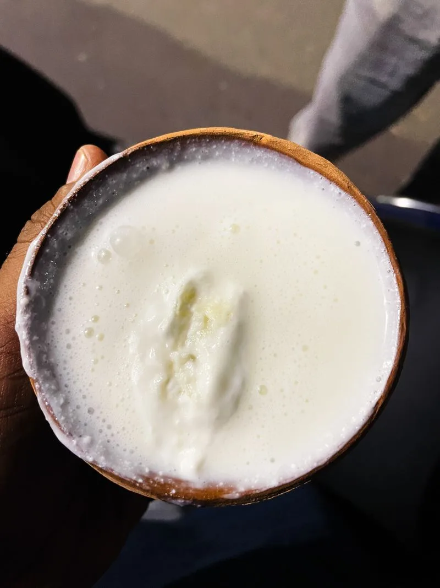
08 · Gallery
Tap any photo to see it full size.
09 · Visit & hours
Address
Bakhtay Wala, Guru Nanak Food Street (Guru Nanakpura), Gujranwala, Punjab
Plus code: 553P+9HR
Phone
+92 321 7137063
| Monday – Sunday | 8:00 AM – 2:00 AM |
|---|
Hours as listed on Google and directory listings. Breakfast is served from opening — come early for halwa puri, and call ahead for grill fish.
Open in Google Maps10 · Questions
The shop opens at 8 AM daily, and the halwa puri is made from opening — reviewers say it is the only place in Gujranwala serving halwa puri that early in the morning.
Seating is limited — most customers get their food packed and eat at home. If you are coming with family, plan on takeaway.
Grill fish is cooked to order and can take a while — one reviewer waited over fifty minutes. Call 0321 7137063 ahead so it is on the grill before you arrive.
Prices on request — call the shop on 0321 7137063 for today’s rates on halwa puri, grilled fish and sweets by the kilo.
Bakhtay Wala, on Guru Nanak Food Street (Guru Nanakpura) in Gujranwala. The Google Maps plus code is 553P+9HR — use the map above for directions.
Delivery is not confirmed in any listing — call the shop to ask about takeaway and delivery for your area.
Call ahead for grill fish, for a family pack of halwa puri, or for mithai by the kilo.
Call 0321 7137063